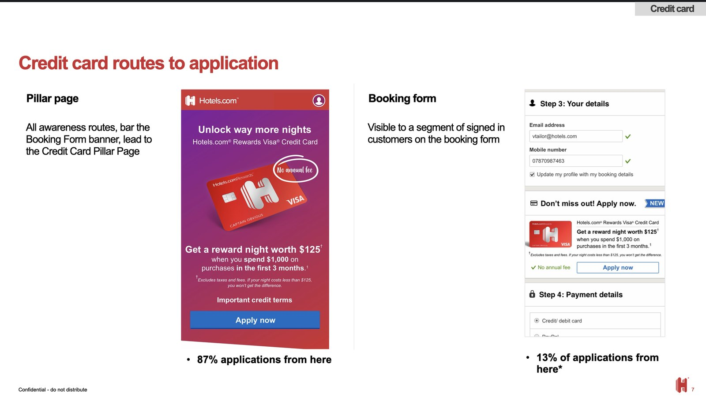
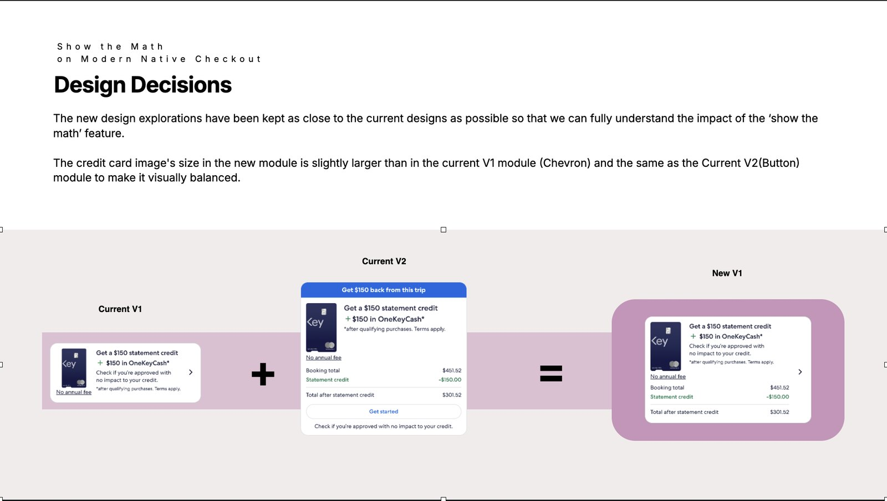

A co-brand credit card across Expedia, Hotels.com and Vrbo, issued by Wells Fargo on the Mastercard network. I led the experience design, and this page covers the application.
My role
Lead Experience Designer and the design owner for the card across the three brands.
What I did myself
Set the design direction, ran the reviews with the bank, and designed parts of the application and the Show the Math placements.
What the team did
The work on this page is team output that I led. Product designers, content designers and researchers did much of the making. Where a decision was mine, I say so.
Partners
Wells Fargo as issuing bank, Mastercard as network, and two agencies on the brand and card assets.
Platforms
Web, native iOS and native Android, each designed to its own platform's conventions.
Scope
The card covers one lifecycle. It starts with eligibility and the application, goes through disclosure and approval, and carries on into card management, the OneKeyCash balance, rewards and offers.
~50,000cardholders
$121Mannual card spend
4×the forecast for cross-sell
20%of new loyalty members arrived as card applicants, against a plan of 5%
These four are programme results. I was a core designer on the programme and do not claim them as mine alone.
Routes into the card application

The problem
When we looked at what makes a card application feel good or bad, it came down to two questions an applicant asks. The first is about clarity. Where am I in this process? The second is about trust. Do I trust Expedia and the bank, does this look credible, and how did they get my personal information?
Every answer we designed then had to clear the bank's legal, risk and compliance teams.
Decisions
Test twice before committing
Chose
Rapid iterative testing. We built two low-fidelity prototypes and ran two cycles of testing and changing them.
Why
We had two known pain points. People were uneasy about pre-filled details and entering a Social Security number, and they could not tell when a credit check would happen. Fast cycles meant we could fix a problem and test the fix in the same week.
Result
Participants found every version clear and easy to complete, and both pain points eased. More than half preferred the version with detailed screens explaining pre-fill at the start.
Two prototypes
Form changes, rated by likely impact
We rated each issue by its likely effect on satisfaction, drop-out, errors and time to complete. These are four of the changes.
Change
Reason
Rating
Moved the Social Security consent next to the field it relates to
It sat several sections earlier, away from the thing it described.
High
Added a heading to separate the applicant's details from a spouse's
It prevents people entering both sets of details in one place.
High
Put income guidance in a bottom sheet, opened from a text link
The applicant stays in the form with the income field still visible. A link says what is behind it, where an "i" icon does not.
Medium
Specified that screen readers announce the final consent before the button
The consent sits under the button to match other Expedia forms. Read in that order, a screen reader user could miss it.
Accessibility
Application, step 1
Image to addThe first step of the application.
Pre-fill explainer
Image to addThe screen that explains pre-filled details.
Income bottom sheet
Image to add"What income to include" open over the form.
Designing inside a partner's SDK
The constraint
At launch the application ran on the bank's SDK, a single-page form with its own structure and behaviour. We could style it. We could not rebuild it.
Chose
One styling approach for the SDK across all three brands, agreed with the checkout team. Launch on the SDK everywhere, with an API route kept for the native apps afterwards.
Then
I led the move to an application hosted by Expedia Group. Phase one mirrored the SDK using design system components, so we could improve it from a known starting point. Phase one shipped.
SDK as supplied
Image to addThe bank's form before styling. A rebuild is fine if labelled.
SDK in our look and feel
Image to addThe same form after styling.
Dark mode at launch
On the table
Engineering proposed launching without dark mode on day one, because it needed bespoke design work.
My position
Dark mode is part of accessibility, so from a design point of view we should launch with it. Add what was decided.
Show the maths
The finding
In our research, "up to" language on rewards was a red flag. People doubted what they would really earn.
Chose
To show the sum. Placements in the navigation, profile, checkout and homepage showed either how much the welcome offer would add to the traveller's balance, or how much less this booking would cost with the statement credit. They went into an A/B test against the original designs.
Independent check
Expedia's research and insights team later tested the advert against four competitor travel cards with 47 people. I did not run that study.
1st of 5 for comprehension, scoring 7.1 out of 10, and second for value.
Show the maths in checkout

Nine variants in a day
Chose
To use AI to produce nine variants of the card offer designs in a day. That used to take a week.
Why
Nine variants were enough to run a bandit test, where traffic moves towards the better performers as the test runs. Add what the test showed.
Working with the bank
Every screen had to clear legal, risk and compliance at the issuing bank. Across the programme that came to more than 120 rounds of review, in sessions twice a week. I treated the review process as something to design.
I set up an informal review ahead of the formal one, so problems were settled together before they entered the formal process. Every review used the same format, which covered what was delivered, what was in progress and what was ready to pick up. I wrote down what the sessions were for.
In 2025 I wrote a design playbook for the card, so new placements stayed consistent with existing ones. We used it as the reference in later reviews.
Before any screens existed, I was the design lead on choosing the issuing bank. I owned the approach, the scorecard, the evaluations and the workshops with the banks, so that they were scored on their ability to deliver a good customer experience and not only on underwriting.
"His willingness to work to understand the Wells Fargo POV and create a path forward that works for both WF and Hcom has been noted and greatly appreciated."
What it did not solve
One in five left at the offer screen
About 20% of applicants left at the offer screen. We designed two responses. One was a short survey from the exit screen asking why they declined. The other was a message on the booking confirmation page showing how much more they would have earned on that booking.
The advert was clear but it did not make people want the card
The same research that ranked the advert first for comprehension scored motivation to apply at 5.5 out of 10. That was the highest of the five, and still low. The advert never said what counts as a qualifying purchase or when the credit arrives, so people assumed it would be on their next bill.
Research figures are from a study by Expedia Group's research and insights team in August 2025, with 47 participants. Design details are shown at a level consistent with confidentiality.